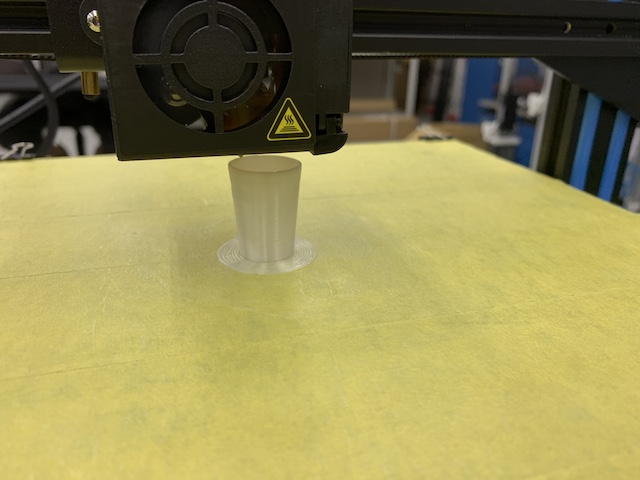

出力時間：20分ほど、円状の積層なのに途中で何回も逆方向に回っていたのが気になった。 それにより表面に折り返した跡が残っていて、見た目はあまり綺麗ではなかった。 プリント自体はとても綺麗に出力されていた。
足元の土台を今回出力した「Brim」以外にも出力して土台の違いを理解する。


出力時間：2時間。過去に製作したArchiCADのデータを、stlで書き出して出力してみた。 好奇心と、細かい部分（プリント限界値以下の要素）がどのようになるかの実験。 結果、細かい部分はざっくりと輪郭を取るような形になり、限界値ギリギリも触れたら折れるほどに脆かった。 また、プリントした部屋の床部分が大きく歪んでしまった。 これが、温度差による歪みなのか、プリンターとしっかりくっついていなかったのかはよくわからない。
プリントしたものが曲がらない方法を考える。 原因究明と対策